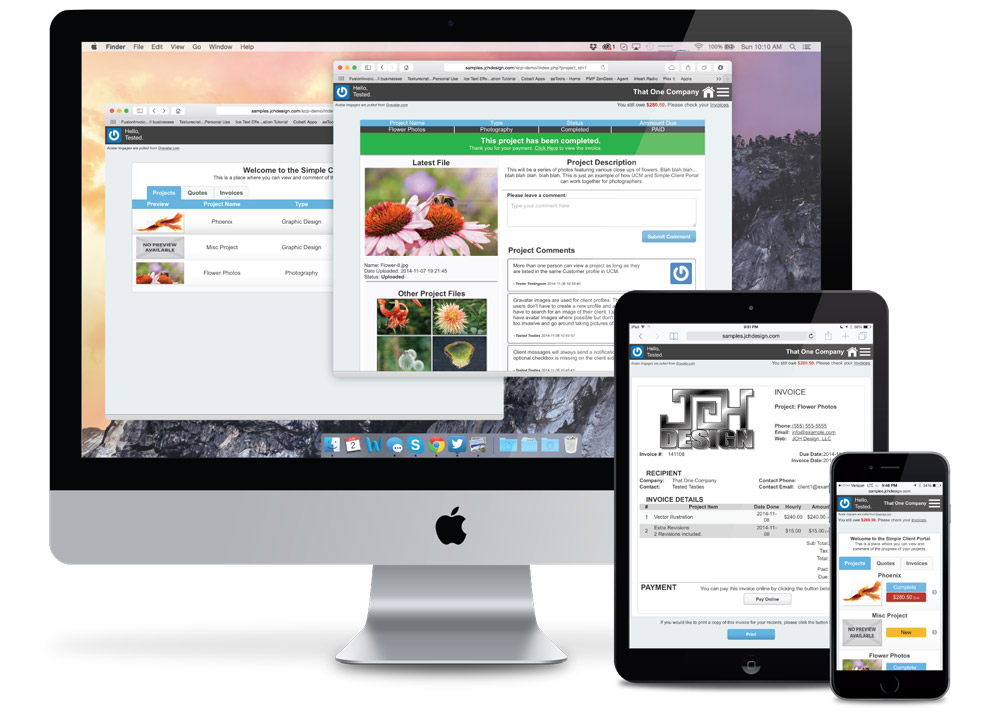

“UCM Client Portal” Documentation by “JCH Design, LLC”
“UCM Client Portal”
Originaly Created: 11/11/2014
Most Recent Update: 11/21/2015
By: JCH Design, LLC
Email: info@jchdesign.com
Thank you to anyone who purchased this project from me in the past or will donate anything for it in the future. This is a suplimental documentation for "UCM Client Portal" included with the software package. It contains basic instalation and usage instructions.
This project is now open source and available on GitHub free of charge. Donations are always welcome but not necessary. More information can be found at UCMCP.JCHDesign.com
Table of Contents
Usefull Links |
 |
A.) Installation - top
REQUIREMENTS:
Ultimate Client Manager (UCM)
PHP 5.4+ (5.5+ Recommended - Built and tested on 5.6)
1.) First make sure you have UCM installed. If you don't have UCM this system will not work. You can get UCM Here.
NOTE: Simple Client Portal was built and tested with 'UCM Pro'. Other versions may work but at this time it is recomended to use the 'Pro' version until further testing can be done.
2.) Once UCM is set up, extract the .zip file for UCM Client Portal and copy the contents to wherever you would like your installation to exist. (EG: www.example.com/clientportal/).
3.)
Option 1: Installer
(Improvements are planned for the installer)
Option 2: Manual Installation
Alternatively you can edit the "config/example.config.php" file in a text editor like Notepad++ and save it as "config.php". This is the file that tells the Client Portal how to label things and how to connect to the UCM database. Make sure the relevant settings such as 'DB_NAME' etc. match the settings from your UCM installation. Everything is labeled and should be prety self explanitory.
UCM Configuration can be found in "(Your-UCM-Directory)/includes/config.php"
Thats all there is to it. Everything should connect to UCM and pull data from there.
B.) Usage - top
Simple Client Portal relies on UCM to work. At this time there the Admin Interface for UCM Client Portal is limited to customization so tasks such as creating new quotes or jobs should still be done in UCM. That said, the system is centered primarily around Graphic Design. UCM seems to be centered around Web Design. There are a few key diferences because of this.
1.) Files are shown on project pages. If you have a file in UCM it needs to be linked with a job to show up in the Client Portal. It is set up this way so clients can see a simple layout with progression through past versions and they can see the current version right up front. It is meant to display an image. For now only browser compatible images will work.
2.) Project Comments are not tied to tasks. This is different from the way UCM works. Typically in UCM you'd have each task layed out with their own comments and seperate comments for files. In UCM Client Portal all comments are placed in the 'job_discussion' table but do not have a 'task_id' associated with them. This is because for a graphic designer the file is the job and tasks tend to center around those files. I wanted a way to see all project comments at once regaurdless of how many tasks there were and those comments need to be relevant to a file.
3.) Emails are currently sent to a general inbox. This will change in the future and allow for the assigned staff member to recieve notifications. For now though, all notification messages will be sent to the address specified in the 'config.php' file. Emails from the quote page are already set up to send to the assigned staff member though.
C.) Sources & Credits - top
I used various pieces of open source code to help in the creation of this system. Below are links to the project websites.
FeatherLight - LightBox Pupups
bigSlide - Main Menu
PHPMailer - Email System
I also recieved help from the all powerfull Google and the great communities that can be found with it.
Once again, thank you so much if you purchased this system. As I said at the beginning, its open source, but I appreciate your contribution.
-Jim (JCH Design, LLC)
1F4iLxNfZdGJkYieZ1raxPHRKDcp6o8sSi